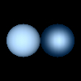

This test was taken from Processing.org which tests to make
sure the shininess() works correctly on a sphere.

// Test from Processing.org size(100, 100, P3D); background(0); noStroke(); fill(0, 51, 102); ambientLight(102, 102, 102); lightSpecular(204, 204, 204); directionalLight(102, 102, 102, 0, 0, -1); specular(255, 255, 255); translate(30, 50, 0); shininess(1.0); sphere(20); translate(40, 0, 0); shininess(5.0); sphere(20);